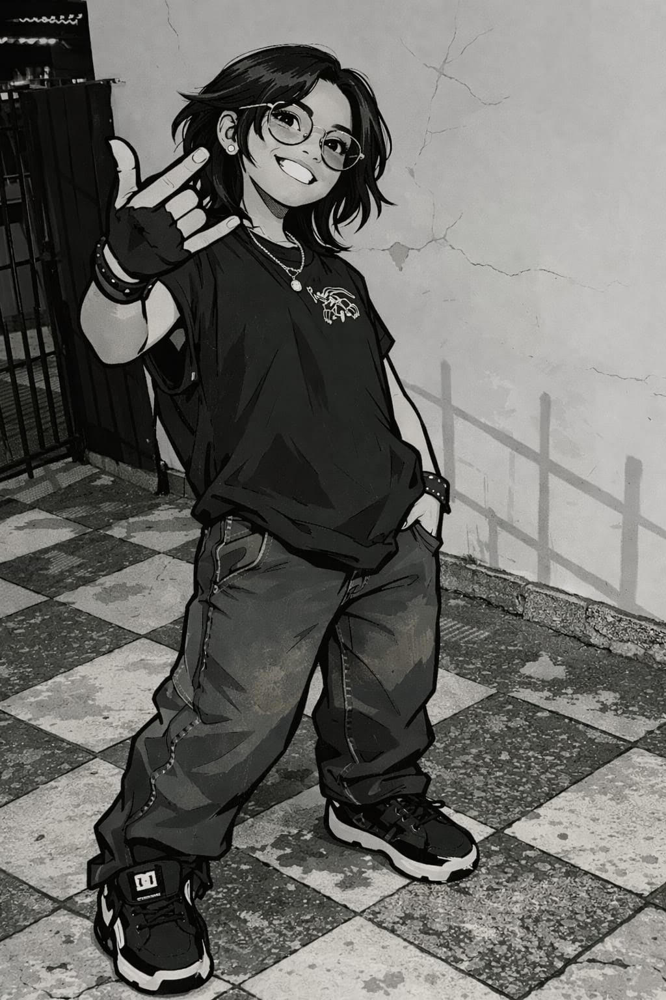

sobre nosotras

somos estudiantes de diseño grafico de grado 11, tenemos 16 años, mafe es una persona alegre, extrovertida, que aprende rapido las cosas y sabe leer a las personas para poder empatizar bien con ellas, le gusta hacer amigos y estar con ellos, Astrid es una persona carismatica, cariñosa, le gusta la musica, le gusta dibujar, no le gustan las oreo, su color favorito es el azul.
Nuestros Trabajos
participamos en la feria de los enfasis, hicimos volantes, publicidad, sitios web, carteleras, pancartas, hemos hecho afiches, logos, tarjetas de presentaciòn